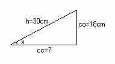

Para el aula
Problema 288
17.25 Halla el perímetro de un triángulo rectángulo, sabiendo que la
hipotenusa mide
Lazcano, I. Barolo, P. (1991): Matemáticas 7º EGB. Edelvives.
Zaragoza (pag 165)
Solución de Manuel Peña Alcaraz (Estudiante de 4º de ESO en el Colegio Portaceli de Sevilla).

Sabemos
que en un triángulo rectángulo ; lo que da 18/30 que es 0,6, que, haciendo el seno inverso
da el ángulo x, y que al hacerle el coseno, nos da
Como el
perímetro es la suma de sus lados, este mide 72cm.
30+24+18=72cm.